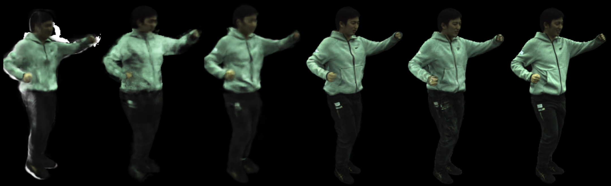

Novel view synthesis
Rendering held-out test frames from the ZJU MoCap dataset (with test-time optimization of SMPL parameters).


Left to right: NeuralBody, AnimatableNeRF, SANeRF, HumanNeRF, Ours, Ground truth.